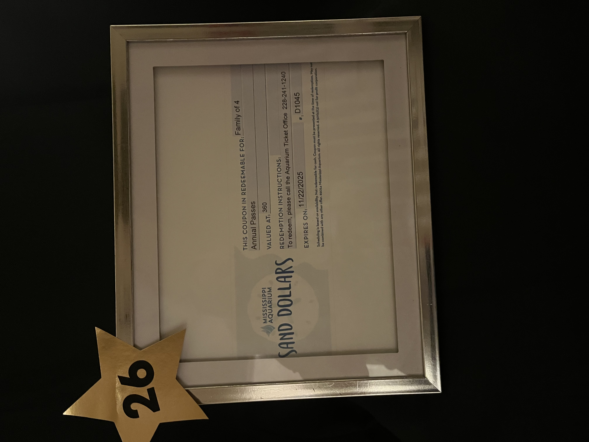
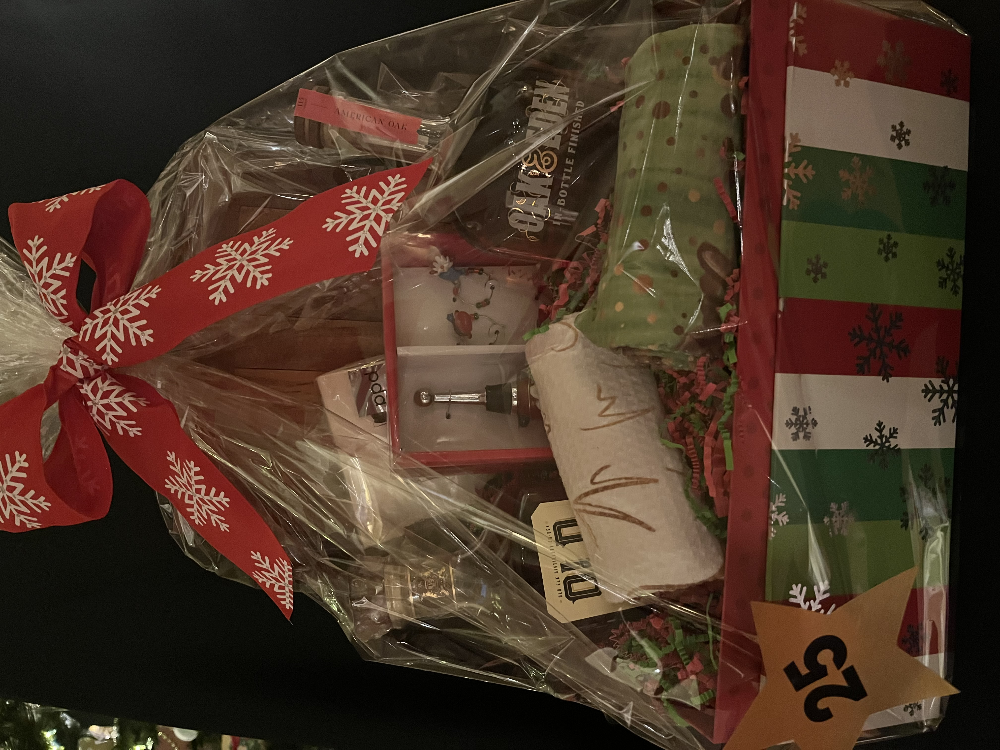
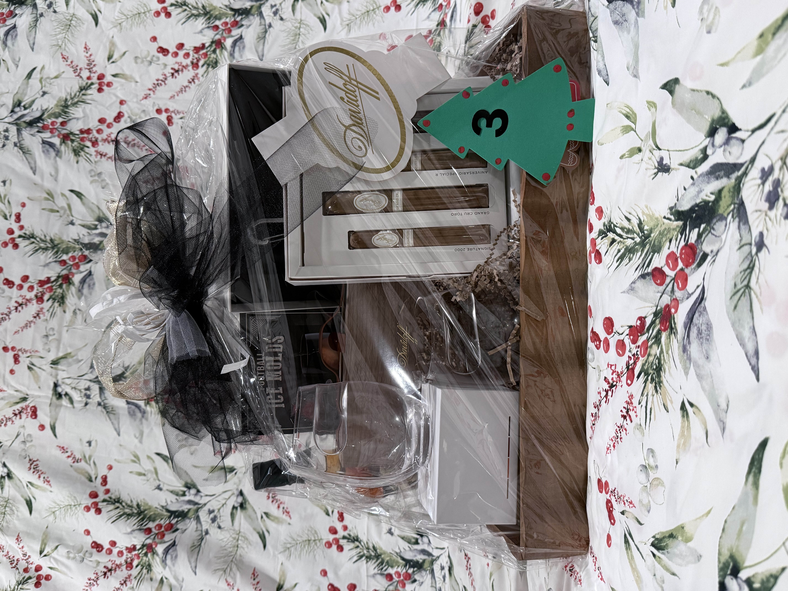
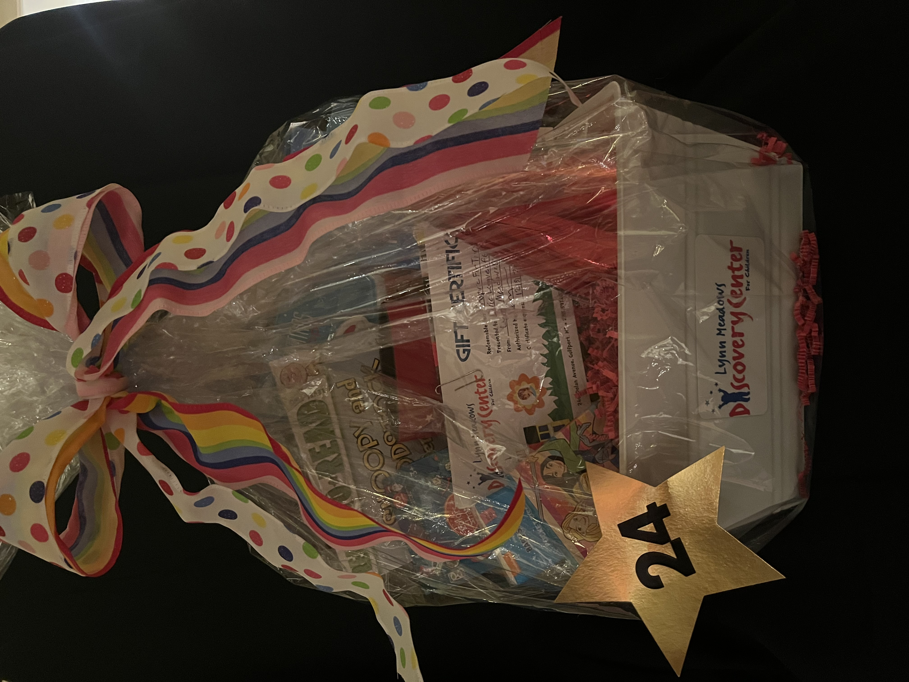
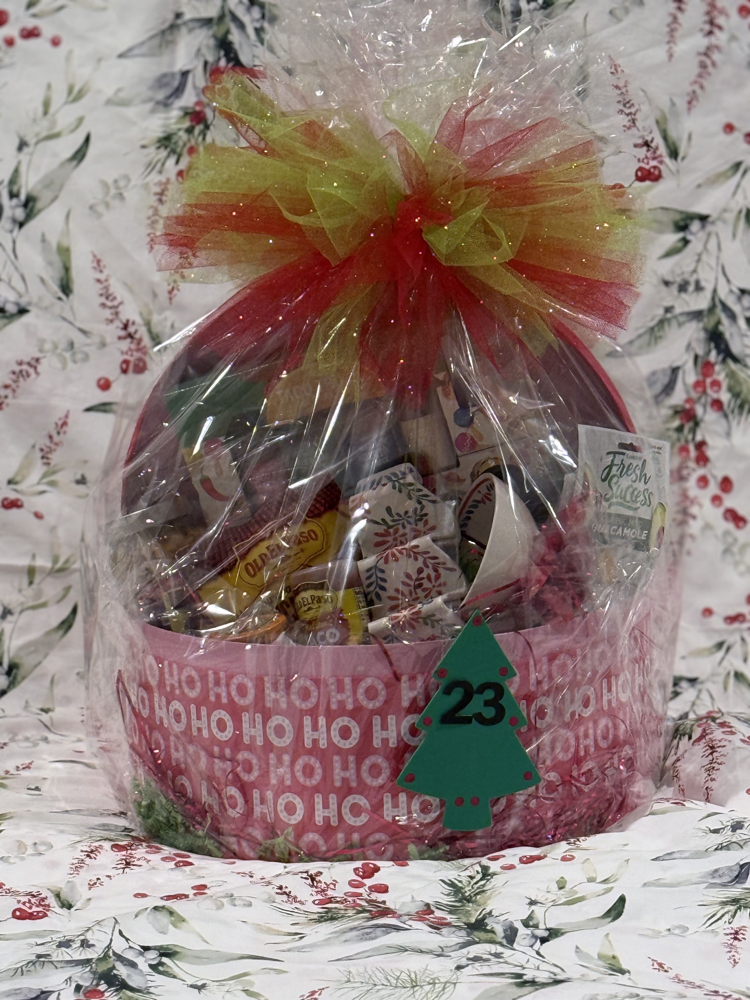

Experience
Mississippi Aquarium Annual Passes
A framed Sand Dollars coupon for a family of four — annual passes to the Mississippi Aquarium.
A treasury of gifts, art, and experiences — donated by Gulf Coast neighbors and businesses, gathered each fall, and shared at the Christmas Tour of Homes.
Items are collected from local artists and businesses each October and November, then displayed at the Christmas Tour of Homes on the first Sunday of December.
Tour-goers place written bids on the items they love most through the afternoon. The highest bid at closing wins — and every dollar goes straight back to the projects and scholarships the League supports throughout the year.
Donations are being gathered through October and November. Check back closer to the Tour for a full preview of this year's baskets, art, and experiences.
A handful of the beautiful baskets donated for the 2024 Silent Auction — a taste of the generosity that fills our tables each year.

A framed Sand Dollars coupon for a family of four — annual passes to the Mississippi Aquarium.

An elegant holiday basket featuring American Oak whiskey, glassware, and seasonal accents.

A premium Davidoff cigar selection paired with whiskey glasses and football ice molds.

A children's basket featuring a Lynn Meadows Discovery Center gift certificate, books, and toys.

Old El Paso favorites, fresh guacamole mix, and festive servingware — a complete taco night in a bow.
A small sample of the dozens of items donated each year by Gulf Coast neighbors and businesses.
Are you an artist, business owner, or simply someone with a beautiful piece to share? We collect items each October and November.
Sponsor a piece, a basket, or the auction itself. We'll recognize your business throughout the Tour and on our Facebook page.